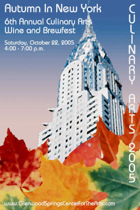

Print Media

Autumn In New York
2005 The Culinary Arts Festival Poster/Collateral Project
A good friend of mine who lived in Glenwood Springs at the time knew I had some artistic abilities. In time she invited me to help the Glenwood Springs Center for the Arts and to serve the Wine and Brewfest board. My role there was to design some of the collateral and assist however else I could.Normally I don't do print, so this was something very much outside of my normal wheel-house. That year's theme was "Autumn in New York". It was a bit challenging for me considering I had never been to New York City!
I tried for hours to emulate some artwork they liked. I wasn't having much success coming up with something I particularly liked, so I decided I was going to throw all that away and simply go with what I know and what I do best. I decided the best way to do that was iconically - the Chrysler Building is about as iconic as they come in NYC. I went with it instead of the Empire State building because it's more interesting looking (I think it's prettier too) and a lot of people would readily recognize it. So I grabbed a nice stock photo of it, and gathered various leaf pictures, heavily applied some effects to them give it a watercolorish look placed them all together and viola, fall leaves over the Chrysler building - says "Autumn in New York" if you ask me...
Fortunately my little brainstorm was well received by the group when I submitted my first draft. I'm very, very pleased with the way it came out.
2006 The Culinary Arts Festival Poster/Collateral Project
This design ended up becoming the base theme for years to come. In 2007 I had relocated back to the front range and others took over my work - the posters for the event closely resembling my original theme. I consider this one of my more artistic successes I have ever had and am proud of the work and the fun collaborative effort in creating it.
Sadly the Glenwood Springs Center for the Arts is gone but I reflect proudly on my contributions to that wonderful organization.